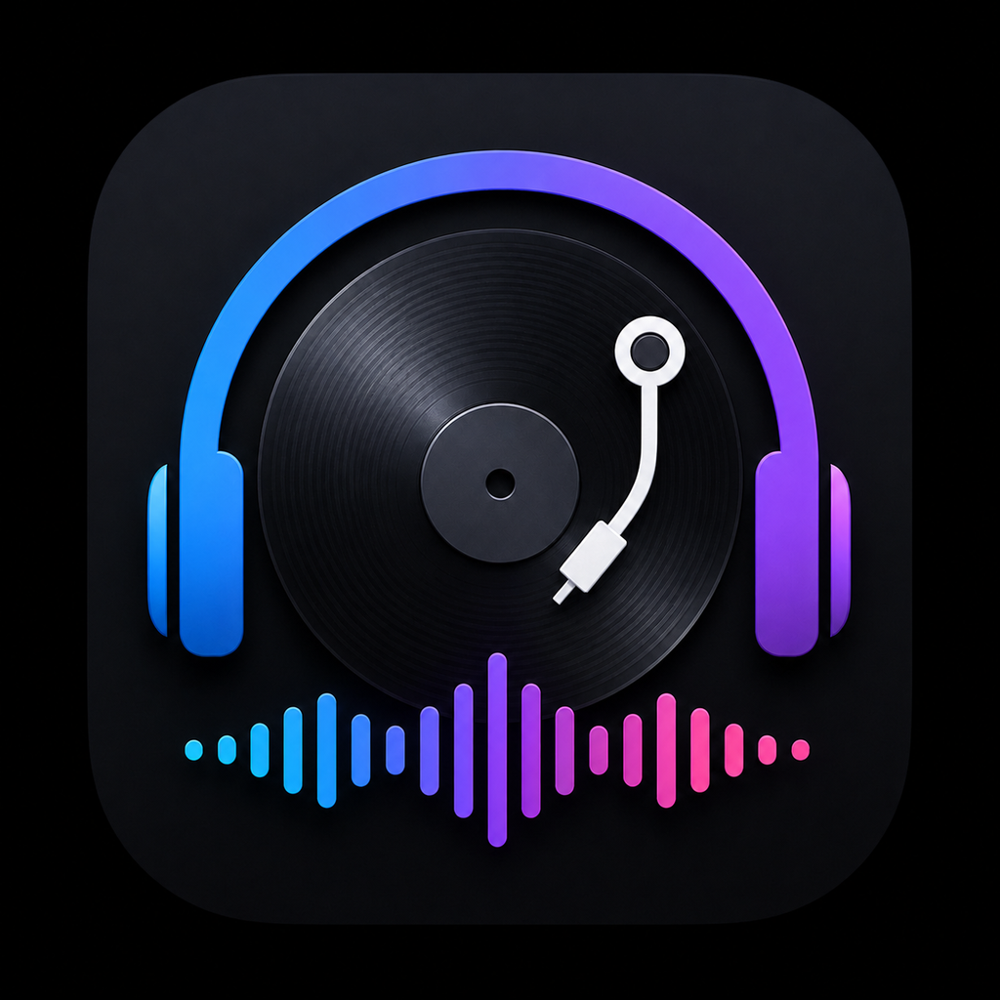

Description
Whether you're learning to mix or playing your hundredth gig, DJ BPM Assistant gives you the math and music theory you need, right on your iPhone. Calculate BPM multipliers in an instant, plan your next mix with a two-deck pitch-shift analyzer, explore transition tips across 15 genres, and navigate harmonic mixing with an interactive Camelot Wheel — all without needing an internet connection.
Key Features
- BPM Calculator: Enter any BPM and instantly see loop-length multipliers (÷2, ×0.75, ×1.5, ×2) to stay locked in at any speed.
- Mix Planner: A two-deck layout shows the exact pitch-shift percentage needed to beatmatch any two tracks, plus loop bridge suggestions for syncopated transitions.
- Genre Transitions: Curated mixing tips for 15 genres including House, Techno, Drum & Bass, Trap, Dubstep, Reggae, Jungle, Trance, and more.
- Camelot Wheel: An interactive harmonic mixing guide that maps every musical key so you always know which tracks will blend naturally.
- Tap Tempo: Tap along to any track to find its BPM on the fly, no hardware required.
- Keep Screen On: Prevent your display from locking mid-set with an OLED-friendly black background that saves battery.
Screenshots


Feedback & Feature Requests
Want to request a feature or provide feedback? Contact us!